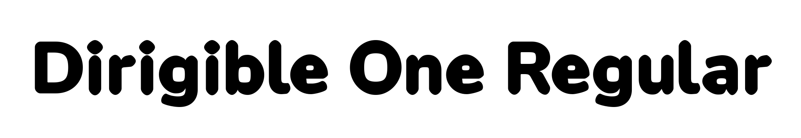

Dirigible One is a display typeface derived from Nunito by Vernon Adams. Every contour has been pushed outward and all corners rounded as far as they go, so the letters look inflated, like type blown full of air.
The font is generated from Nunito's contours by a Python script at sources/dirigible.py. The script offsets every path outward by a fixed amount and rounds all the corners to their geometric maximum. The result is a single weight display face for posters, titles, and large decorative text.
Dirigible One includes Latin and Cyrillic coverage for most European languages. Because of its inflated forms, it works best at display sizes, above 24pt, where the puffy character comes through.
Nunito was originally designed by Vernon Adams. Dirigible One is a derivative work by Michael Seh.
